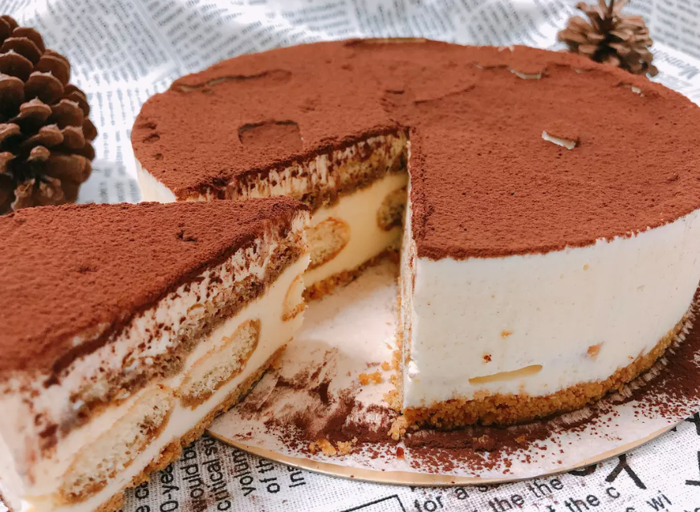
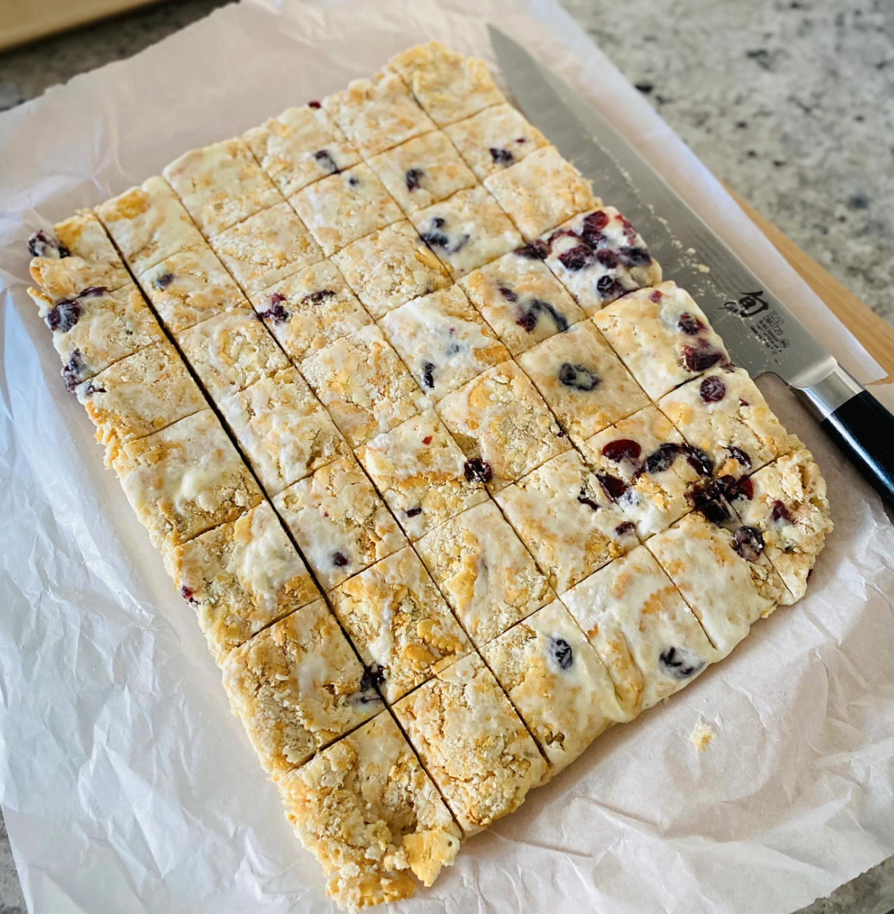

提拉米蘇
準備材料（以下大概能做2份）：
-
馬斯卡彭乳酪 500g
- 砂糖 50g
- 手指餅乾 or 消化餅 1包
- 巧克力餅乾(可可粉) 適量
- 牛奶 20-50ml （讓乳酪口感變軟嫩)
-
混合糖與馬斯卡彭乳酪打發至硬性發泡（依照混合物狀態添加適量牛奶）
- 碾碎餅乾製作可可粉（有可可粉的可省略此步驟）
- 將手指餅乾在容器內鋪滿鋪平
- 塗上步驟1 製作的乳酪混合物
- 灑上適量可可粉
- 製作下一層與下下一層直到佔滿容器（每一層餅乾需交錯拼疊）
- 放入冰箱冷凍半小時

雪Q餅
- 無鹽奶油70g
- 棉花糖300g
- 全脂奶粉70g
- 蔓越莓果乾100g (可用任何果乾或是堅果類取代)
- 奇福餅乾300g
- 用小火將奶油融化
- 將棉花糖放入至融化並加入奶粉
- 將蔓越莓果乾和奇福餅乾放入拌勻
- 起鍋整形
- 放置涼後切成小正方形即可
